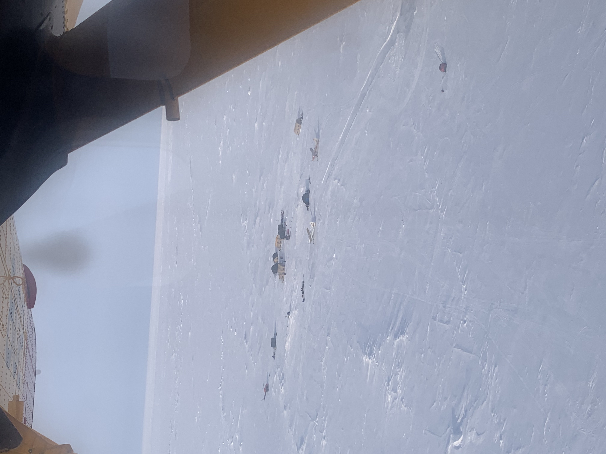
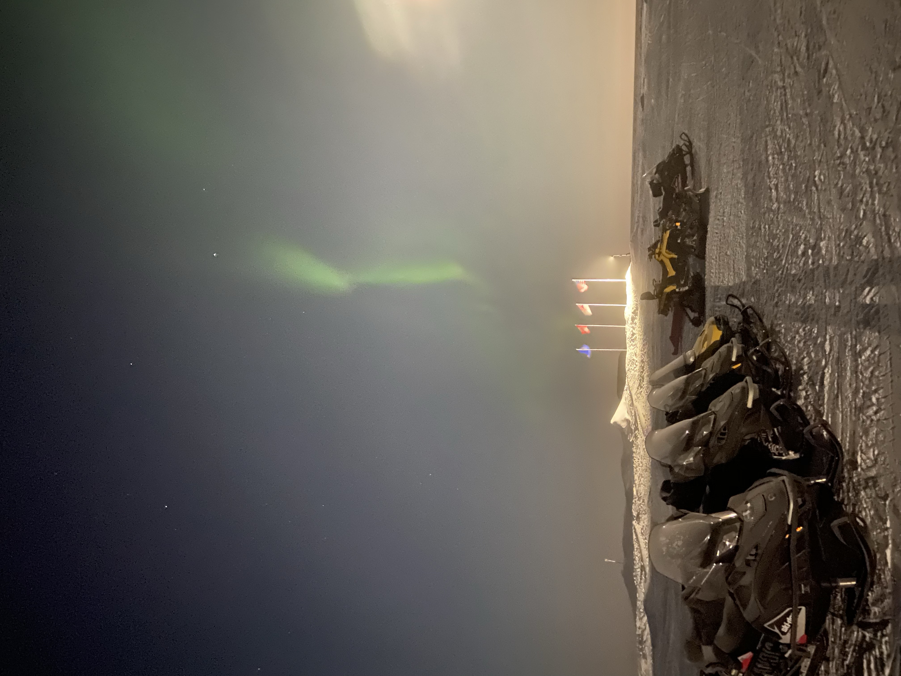
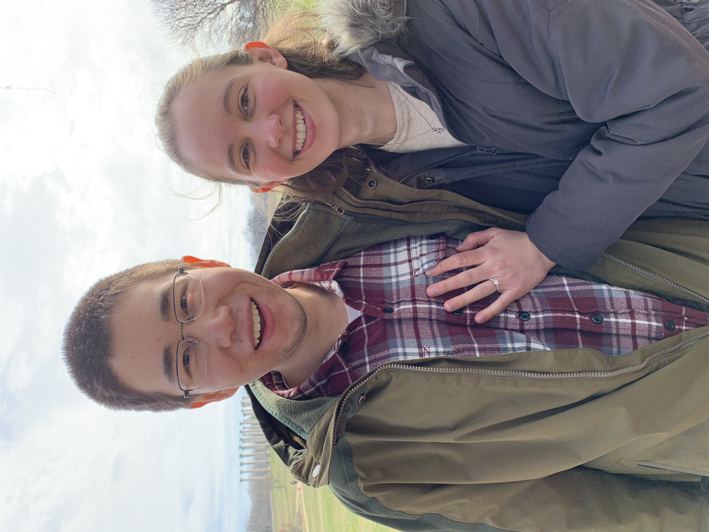
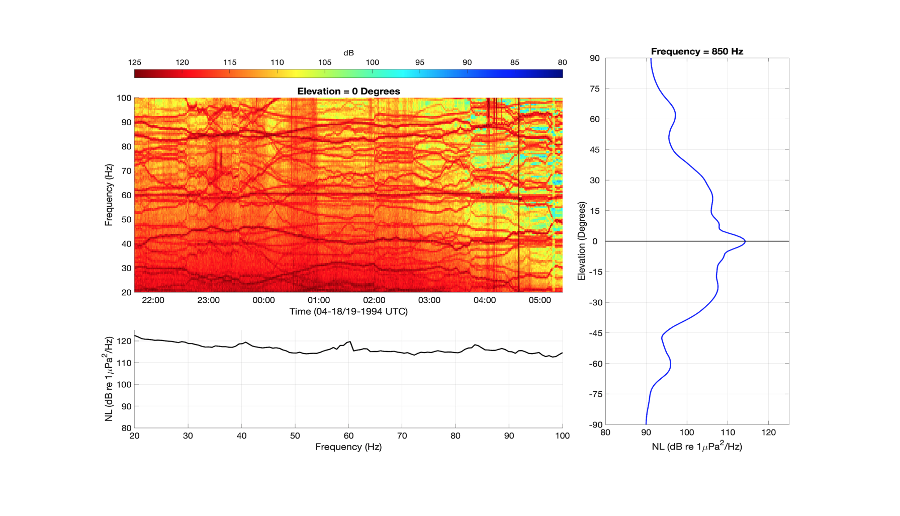
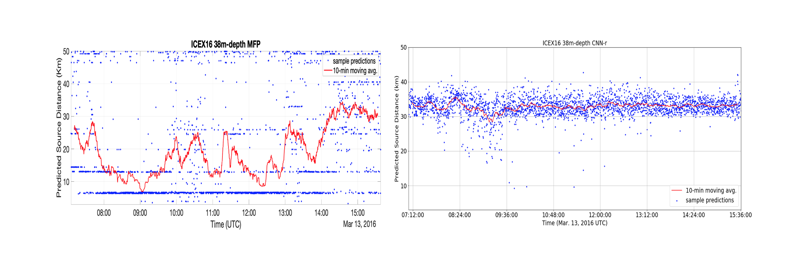
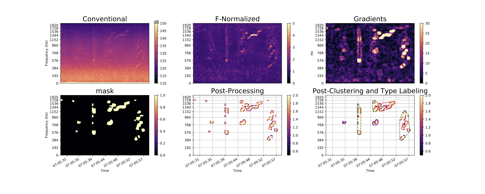

Underwater acoustics, Arctic ambient noise, signal proessing, machine learning ...
About Me
Who Am I?
I'm a 4th year graduate student in the MIT-WHOI joint program. I'm working with Professor Henrik Schmidt in the Laboratory for Autonomous Marine Sensing Systems (LAMSS). My research focuses on using signal processing and machine learning techniques to extract useful information from Arctic Ocean underwater ambient noise; these insights are then used to characterize the propagation environment and better inform underwater communication and navigation of autonomous underwater vehicles (AUVs). In the past, I have worked on various other projects. I spent a summer working at the Pacific Tsunami Warning Center in Hawai'i, developing a current velocity threshold for issuing warnings. This experience was my first ocean-related project and sparked my current interest into the field of ocean acoustics. As an undergraduate at Northwestern University, I particularly enjoyed physics and Earth science. I completed my honors thesis on a study of unusually cold and dense interstellar clouds and have also conducted research in isotope geochemistry prior to that. Indeed, my interests are varied and continuously evolving. I really enjoy the challenge and excitement that comes with breaking into an unfamiliar field. Each day, I'm learning something new!
Outside of research, I love to cook and travel. I am an avid Northwestern Wildcats fan and enjoy following MIT athletics as well. I played the clarinet throughout high school and college and was proud to be a member of the Northwestern University "Wildcat" Marching Band. I now continue performing in the MIT concert Band.
ICEX-2020 Experiment, Alaska I recently participated in the ICEX'20 experiment, which is a continuation of our lab's research into the Arctic underwater acoustic environment and operation of AUVs in the region.

ICEX-2020 Experiment, Alaska ICEX'20 camp as seen from the flight in.

ICEX-2020 Experiment, Alaska Aurora borealis over the ICEX'20 camp.

National Arboretum, Washington, D.C My fiancé Christine and I visited the National Arboretum on a music trip with the MIT Concert Band.
My Research
Here are some of my projects
Arctic Ocean Ambient Noise [Tools used: Matlab, Python, OASES, Bellhop, Tensorflow]. The Arctic Ocean is an ever-more dynamic and strategic region. I am analyzing underwater ambient noise data collected in two experiments (ICEX-2016 and SIMI-1994) to study how the Arctic soundscape has changed due to its shifting environment. With a better understanding of the ambient noise, we can more reliably carry out autonomous underwater vehicle (AUV) missions by enhancing communication and navigation. In addition, I am applying machine learning techniques such as convolutional neural networks (CNN) to estimate the range of surface noise sources in the Arctic environment in order to better characterize noise generation in the ice cover. I am also using image processing and unsupervised clustering techiques to detect and group transient noise events in data spectrograms to examine the temporal distribution of Arctic ambient noise.

Beamforming output of SIMI'94 ambient noise Persistent, meandering tonals are observed on the spectrogram, which are likely caused by grinding interactions between surface ice sheets. In more recent years, the Arctic ice cover has become thinner and younger, making it less capable of withstanding the pressure needed to generate these tones. As a result, these features are not observed in the ICEX'16 data.
More localized and discrete surface source distribution Another result of a thinner and younger ice cover is that noise generation in the ice is now more spatially localized and discrete rather than uniformly distributed over the ice cover. OASES Modeling output using a discrete surface noise source matches the observed 2016 noise beamforming profile much more closely than a uniform surface source distribution model. Specifically, ambient noise during ICEX'16 appears to be generated at ranges of 25-50Km away.

Surface noise source range estimation For both plots, the expected source distance with time is between 25-35Km. The conventional method of source-range estimation, matched field processing (MFP), can be very sensitive to environmental mismatch (difference between the modeled environment and the acutal environment). This is why its predictions stray far from the expected values. In comparison, the CNN approach shows more robustness to mismatch and results in more consistent predictions that are closer to the expected values.

Tranisent event detection and clustering With some image processing, low-SNR, transient features are isolated from the data spectrogram. Using hierarchical clustering with a custom distance metric, the features can be grouped in an intuitive manner.
Arctic Ice Cover Monitoring [Tools used: Matlab, Python, OASES]. This project focuses on the detection and localization of cryo-seismic events in the Arctic ice cover with a 4-element planar geophone array. I have been developing an event detection and localization algorithm by using amplitude thresholding and time-difference of arrival. The results from this study help to enhance our knowledge of ice cover activity and the distribution of noise generation in the ice.
Localization of cryo-seismic events detected in a calibration dataset. More than one calibration event occurred at each true event location. By minimizing the error between the true and estimated locations, propagation velocity (v) can also be estimated for each event. Estimation error grows for events that occur further away from the geophone array center.
MIT Autonomous Underwater Vehicles Course [Tools used: MOOS-IVP, C++]. For this project, an autonomous vehicle behavior was developed that allows two partner vehicles to collaborate and survey a simulated temperature front in the Charles River. Acoustic message passing between the vehicles enables them to share collected data with each other and sychronize their return after the completion of the mission.
Ambient noise from the Beaufort Sea recorded in experiments more than 20 years apart (SIMI94 and ICEX16) are compared to determine differences that may be attributed to the region's rapidly changing environment.
A current velocity threshold for Tsunami warning issuance by employing a 1-D shallow water model to simulate Tsunami events and quantifying their human and economic impacts.